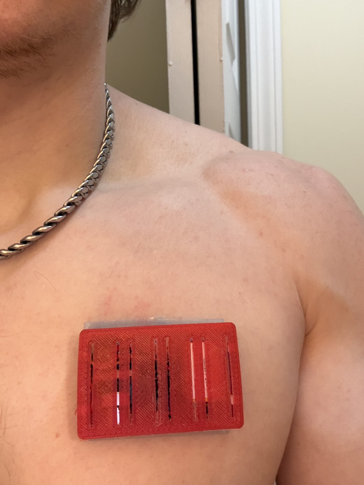
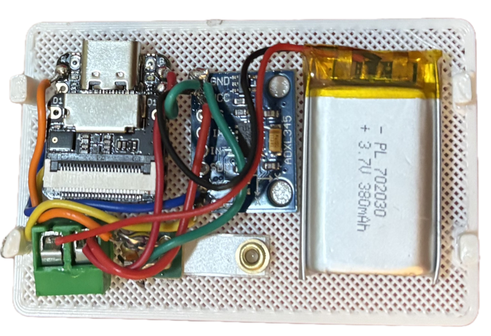
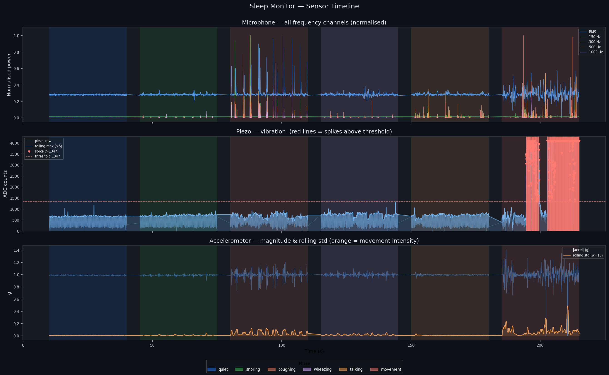
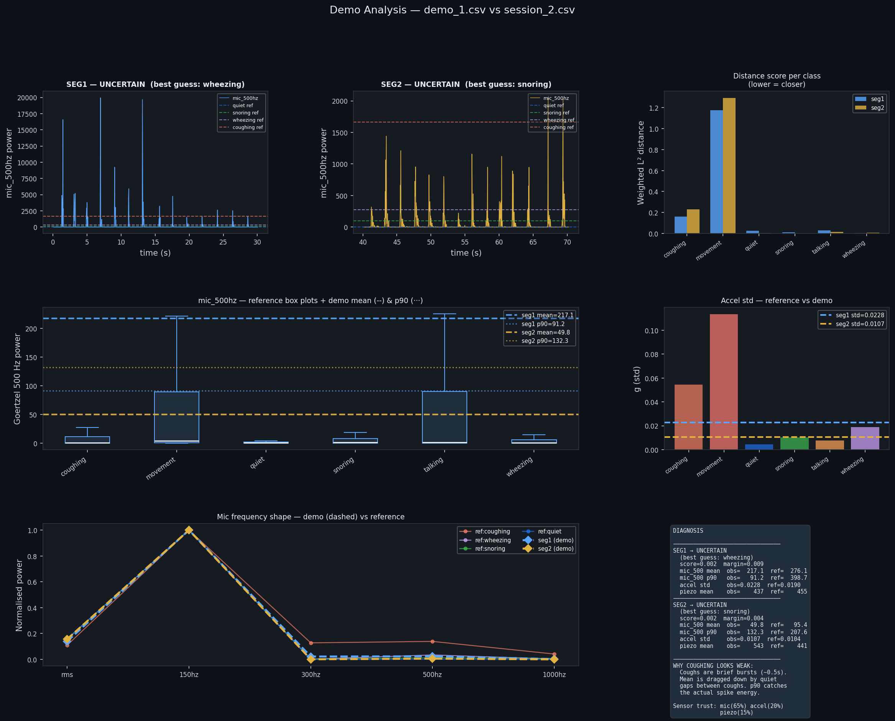

A detailed look at the mechanical, electrical, software, and clinical foundations of the Dr. Somno respiratory monitoring device.
The physical form factor of Dr. Somno is just as critical as its electronics. The enclosure must couple sensors reliably to the body, protect sensitive electronics, and remain comfortable enough to wear through an entire night of sleep.
The device is housed in a custom TPU (thermoplastic polyurethane) enclosure designed to be adhered to the patient's chest. TPU was selected for its flexibility and skin-compatible compliance — it conforms to body contours rather than resisting them, which reduces movement artifacts that would otherwise corrupt the sensor signals.
The enclosure also serves as the primary acoustic coupling interface for the piezoelectric sensor. The TPU layer introduces a controlled level of damping that filters out high-frequency mechanical noise while preserving the low-frequency respiratory effort signals the MiniSense 100 is designed to capture.

Flexible, skin-safe, and mechanically compliant. Conforms to chest wall during sleep without rigid pressure points.
Medical-grade adhesive patch secures the device to the chest. Designed for single overnight use with easy removal.
Placement is optimized for the sternum region to maximize coupling with respiratory effort and minimize cardiac interference.
The electrical design centers on the Seeed Studio XIAO ESP32-S3 Sense, integrating multi-modal sensors and a clean power supply into a compact, low-noise circuit.
The XIAO ESP32-S3 Sense acts as the central processor, handling computation, wireless communication, and audio input through its onboard PDM microphone (MSM261D3526H1CPM). It features a dual-core Xtensa LX7 processor running at up to 240 MHz, 8 MB of PSRAM, and 8 MB of flash — substantial resources for an embedded wearable.
Power is supplied by a 3.7V lithium polymer battery fed through a buck converter and filter capacitor, producing a stable regulated 5V rail. This clean supply is critical: noise on the power rail couples directly into the analog signal chain and degrades the piezoelectric sensor readings.
The MiniSense 100 piezoelectric sensor includes internal EMI shielding, which helps reject interference from the ESP32-S3's radio and switching converter. This shielding was a key selection criterion — unshielded piezo films pick up significant switching noise in close proximity to a BLE radio.
| Component | Role & Spec |
|---|---|
| XIAO ESP32-S3 Sense | Central MCU, dual-core LX7, 8MB PSRAM, BLE 5.0 |
| MSM261D3526H1CPM | Onboard PDM microphone, 16 kHz / 16-bit audio |
| MiniSense 100 | Piezo film sensor — low-freq breathing effort, EMI shielded |
| ADXL345 | 3-axis accelerometer, I²C (0x53), 50 Hz, motion artifact detection |
| 3.7V LiPo | Primary battery, overnight capacity |
| Buck converter | 3.7V → 5V regulated supply |
| MicroSD (SPI) | Primary storage — MOSI 9, MISO 8, SCK 7, CS 21 |
CLK on GPIO 42, DATA on GPIO 41. Records at 16 kHz, 16-bit mono via the I²S PDM driver. Primary source for acoustic classification.
MiniSense 100 on ADC1_CH0. Attenuation set to 0 dB (0–750 mV range) for maximum sensitivity to low-amplitude chest wall vibration.
ADXL345 on SDA 5, SCL 6. Address 0x53 (SDO low). Samples at 50 Hz. Used to separate body movement from respiratory events.
All sensor data written to SD card first, before any wireless transmission — guaranteeing zero data loss regardless of BLE status.

The software spans two layers — an embedded FreeRTOS firmware on the ESP32-S3 that captures and stores data, and a Python analysis pipeline that classifies respiratory events and generates clinical reports.
The ESP32-S3's two independent Xtensa LX7 cores are used deliberately: Core 1 (APP_CPU) is dedicated to time-sensitive sensor tasks, while Core 0 (PRO_CPU) manages the BLE radio stack. This isolation prevents wireless traffic spikes from interrupting the audio capture loop.
Inter-core communication uses a FreeRTOS queue. The mic task enqueues audio chunk pointers for BLE delivery on a best-effort basis — if the queue is full, the frame is dropped and freed immediately. The SD card write always happens first, unconditionally, so no data is ever lost to storage.
Establishes ambient noise floor for normalization. Label: quiet.
Snoring, coughing, wheezing, talking, and movement — each 30 seconds with 5s breaks.
All sensor streams written to session_N.csv: mic RMS, Goertzel freq bins, piezo, accelerometer XYZ.
Offline pipeline segments audio, extracts features, classifies events, and generates AHI report + spectrogram.
Per-frame features: mic RMS, spectral centroid, bandwidth, low/mid/high band energy ratios (split at 500 Hz and 1500 Hz), zero-crossing rate, and onset sharpness.
Coughs: high broadband energy + sharp onset. Snores: low-freq dominant, repetitive. Gasps: spike within 2s of an apnea window. Designed to be swapped for an ML model.
9-feature MLP (mic RMS, 4 Goertzel bins, piezo, accel XYZ) trained on labeled session CSVs. 6-class output: quiet, snoring, coughing, wheezing, talking, movement.
Estimates Apnea-Hypopnea Index (events/hr), longest and mean apnea durations, cough count, snore percentage, and a plain-language physician summary.


Every design decision — from sensor selection to report format — is grounded in how sleep-disordered breathing is actually diagnosed and what physicians need to act on a finding.
The gold standard for diagnosing obstructive sleep apnea (OSA) is polysomnography (PSG) — a full overnight study in a sleep lab measuring EEG, EOG, EMG, airflow, SpO₂, and respiratory effort simultaneously. The Apnea-Hypopnea Index (AHI) derived from PSG is the primary metric physicians use: mild OSA is AHI 5–15, moderate 15–30, severe above 30 events per hour.
Dr. Somno targets the same AHI output using only acoustic and motion sensors — a deliberate tradeoff between clinical completeness and accessibility. The device is not intended to replace PSG, but to serve as a low-barrier screening tool that flags patients who should proceed to a full study.
Snoring, wheezing, coughing, and the silence of apnea all have distinct acoustic signatures. A well-placed microphone captures the complete respiratory sound picture without requiring airflow cannulas or effort belts.
Acoustic signals alone can be confounded by movement noise. The piezo measures chest wall vibration and the accelerometer provides body position/movement context — together they help separate true respiratory events from artifact.
The report uses standard clinical language — AHI, event duration, event type — that maps directly to what a pulmonologist or respiratory therapist expects from a sleep study summary.
| Event Type | Clinical Significance | Detection Method |
|---|---|---|
| Apnea | Cessation of breathing >10s — primary OSA indicator; contributes directly to AHI | Silence window in mic RMS + flat piezo signal |
| Hypopnea | Partial airflow reduction — counts toward AHI with arousal or SpO₂ drop | Reduced mic energy + reduced piezo amplitude |
| Snoring | Indicates partial airway obstruction; marker for OSA risk | Low-freq (100–500 Hz) dominant, repetitive pattern |
| Wheezing | Suggests bronchospasm or airway narrowing; relevant for asthma/COPD | High 500 Hz Goertzel bin amplitude (~276 avg in test data) |
| Coughing | Repeated coughing during sleep may indicate GERD, postnasal drip, or asthma | Broadband spike, sharp onset, high zero-crossing rate |
| Movement | Frequent arousals disrupt sleep architecture; correlates with PLM disorder | Accelerometer magnitude std >0.05 + piezo spike (~5× baseline) |